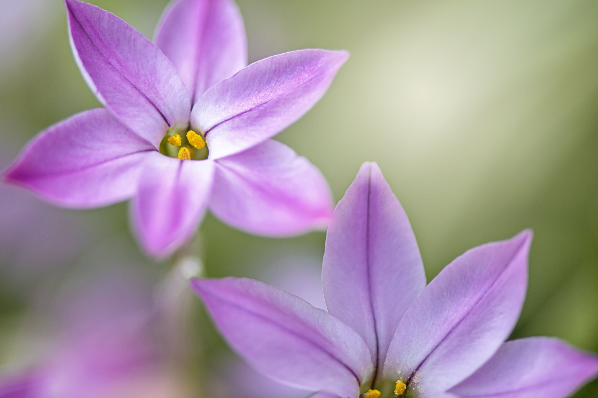

Flowers
Spring flowers include hyacinths, sweet pea, lily of the valley and freesia, all highly-scented additions to bridal bouquets. Not forgetting seasonal favourites like tulips, daffodils, and forget-me-nots which all add fantastic texture to bouquets, boutonnieres or centrepieces.